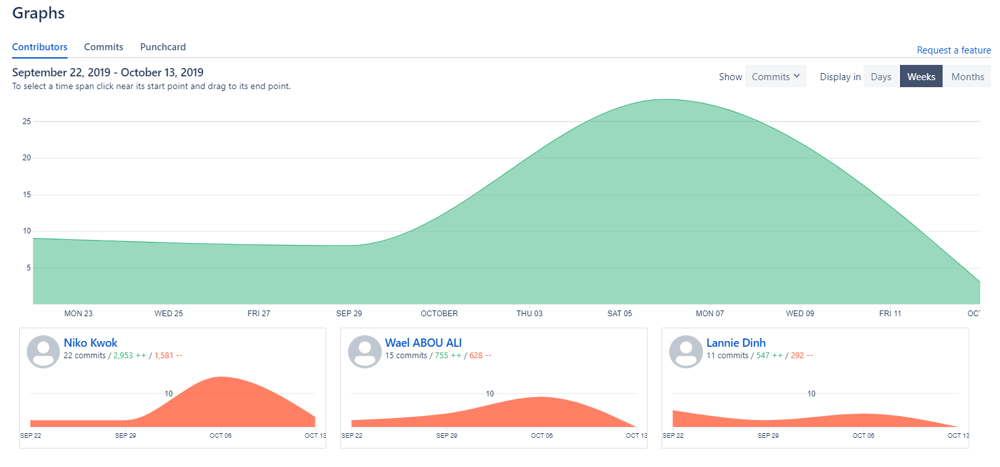
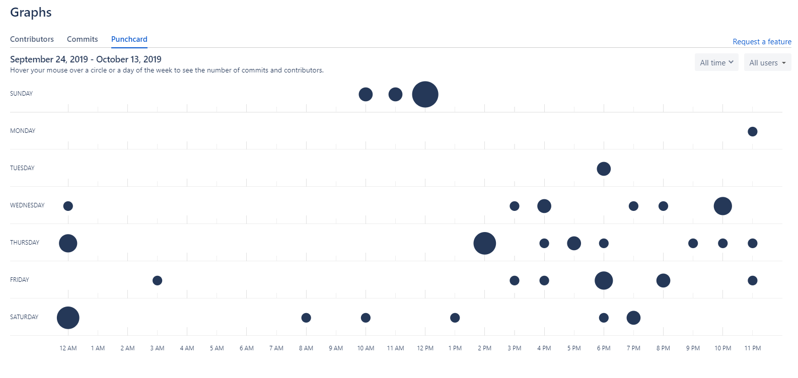
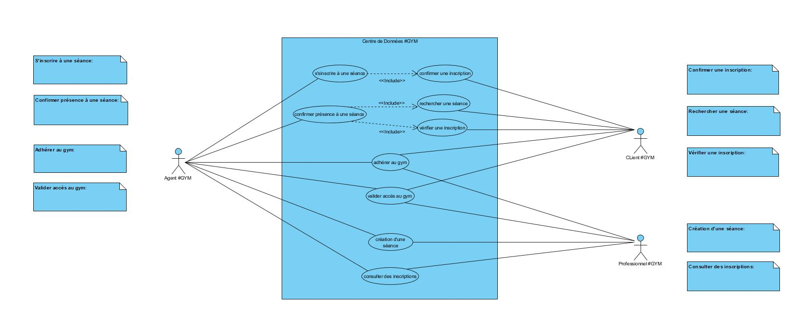
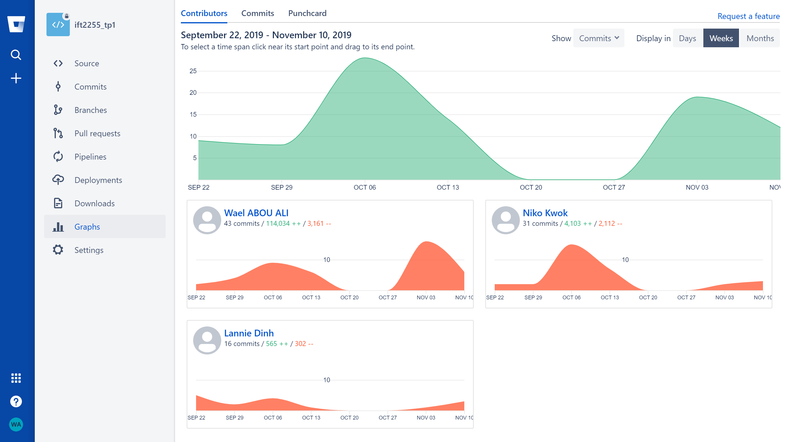
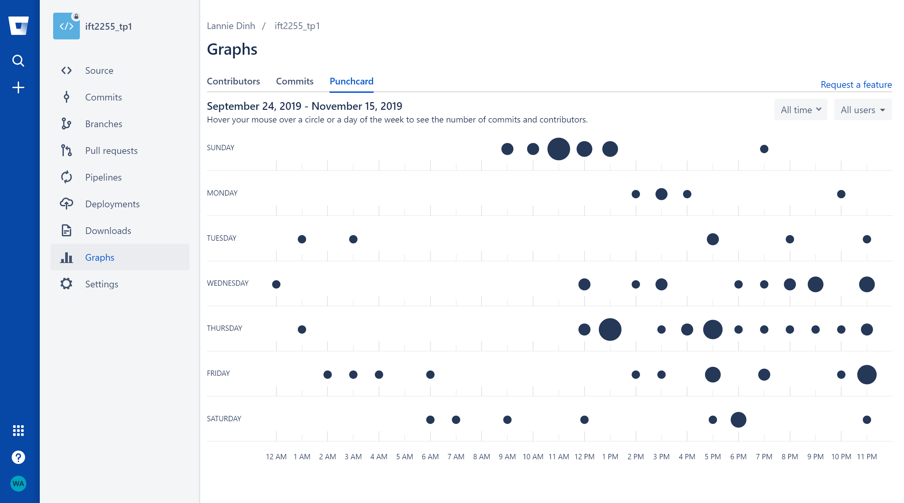

IFT 2255 - Automne 2019
Devoir 1 - Rapport
Informations générales
Nom : Lannie Dinh
Matricule : 9792
Courriel : lannie.dinh@umontreal.ca
Temps mis : 2h (diagramme) / 1h (structure rapport)/ 1.5h (glossaire) / 3h (CU)
Nom : Niko Kwok Hiu Fung
Matricule : 6286
Courriel : niko.kwok.hiu.fung@umontreal.ca
Temps mis : 1h30 (mis en page html) / 9h (implémentation) / 2h (CU)
Nom : Wael Abou Ali
Matricule : 4365
Courriel : wael.abou.ali@umontreal.ca
Temps mis : 2h (risques) / 2.5h (exigences) / 2h (CU) / 1h (hypothèse).
Distribution des tâches
Soumissionaire : Niko Kwok Hiu Fung
| Tâche | Lannie | Niko | Wael |
|---|---|---|---|
| Glossaire | 100% | ||
| Diagramme de cas d'utilisation | 100% | ||
| Cas d'utilisation | 35% | 35% | 30% |
| Risques | 100% | ||
| Exigences non-fonctionnelles | 100% | ||
| Implémentation | 100% |
Voici un lien vers les statistiques Bitbucket


Hypothèses
Nous avons supposé que l'agent de #GYM pourrait offir 5 catégories de services:
- Gérer accès:
- Adhérer au #GYM.
- Suspendre un membre (une idée pour le futur mais pas mentionné dans le tp).
- Valider accès(c'est une étape importante pour valider l'accès avant de réaliser les activités suivantes) :
- Accéder au #GYM : c'est sûr que nous aurons besoins de valider le numéro de membre avant d'y accéder au #GYM<./li>
- Vérifier une inscription : le client doit donner son numéro de membre pour vérifier sa validité avant de vérifier si le client est inscrit dans une séance ou pas.
- S'inscrire dans une séance : Aussi c'est obligatoire de vérifier la validité du membre avant de s'inscrire.
- Confirmer présence à une séance.
- Créer une séance : Pour un professionnel, il faut donner son numéro de membre pour le vérifier et lui créer la séance désirée.
- Consulter les inscriptions dans une séance.
- Supprimer une séance : Ce n'est pas mentionné dans le tp mais ça pourrait être comme une possibilité au futur.
- Gérer les inscriptions:
- Vérifier une inscription.
- S'inscrire dans une séance.
- Confirmer présence à une séance.
- Rechercher une séance(Cette étape est importante pour obtenir la séance qu'on cherche pour la traiter):
- Vérifier une inscription.
- s'inscrire à une séance.
- Confirmer présence à une séance.
- Consulter des inscriptions dans une séance.
- Créer une nouvelle séance.
- Supprimer une séance.
- Gérer les séances:
- Consulter les inscriptions dans une séance.
- Créer une séance.
- Supprimer une séance.
- Les démarches en bref seront:
- le client se présente au comptoir.
- L'agent lui demande comment il pourrait lui aider aujourd'hui.
- L'agent amène le choix du client au menu principal du logiciel.
- Les étapes de vérification seront faites.
- Si la vérification est invalide, le client sera bloqué de réaliser sa demande.
- Si c'est valide, l'agent affirme le membre que sa demande est traitée avec succès.
- Si le membre veut y accéder au #GYM l'agent lui ouvre le tourniquet ou s'il veut un autre service l'agent remet le logiciel à la page principal pour commencer avec un nouveau choix.
- Si le membre a terminé sa demande, l'agent remet le logiciel à son état intial pour aider un nouveau client.
Tâche 1 : Glossaire
- #GYM : un centre sportif qui offre des services pour différentes activités physiques, dont une salle de machines, une piscine, des séances d'entraînement et de consultations avec des professionnels.
- Adhérer : devenir membre du #GYM (client et professionnel).
- Agent : employé du gym qui gère, via le Centre de Données, les opérations en lien avec les membres (les clients et les professionnels).
- Centre de Données : logiciel, système central qui contient toutes les informations des membres et des professionnels et qui permet de faire des opérations particulières.
- Client : personne adhérée au #GYM pour les services qu'il fournit.
- Code de membre : synonyme de numéro de membre.
- Code de service : numéro unique de 7 chiffres associé à un service offert par un professionnel.
- Compte : Espace regroupant les informations personnelles du membre/professionnel dans le centre de données.
- Inscription : action du client de s’inscrire à une séance donnée par un professionnel.
- Membre : une personne adhérée au #GYM qui a accès à ses services (client et professionel).
- Numéro de membre : numéro unique associé à un membre.
- Professionnel : personne adhérée au #GYM offrant des services aux clients du #GYM, tel que des entraînements et des consultations.
- Requête : demande envoyée d’un système à un autre.
- Réception du centre : endroit où se trouve l’agent du #GYM et où se font les operations en lien avec les clients et les professionnels.
- Répertoire des Services : espace dans le Centre de Données regroupant l'ensemble des services offerts par les professionels et les séances disponibles pour le jour même.
- Service : activité offerte par un professionnel, soit une consultation ou un entraînement.
- Système central : Centre de Données.
- Séance : un entraînement ou une consultation avec un professionnel issu d'un service qu'il offre à un moment spécifique (jour et heure).
- Tourniquet du centre : endroit géré par l'agent par lequel le membre/professionnel passe pour avoir accès au #GYM.
- Visite : action de se rendre au #GYM pour utiliser ses services.
Tâche 2 : Diagramme des cas d'utilisation
Voici un lien vers le diagramme Tâche 3 : Cas d'utilisation
But : Créer un compte membre et recevoir un numéro de membre pour avoir accès au #GYM.
Préconditions :
a. Avoir toutes les informations et données nécessaires pour adhérer à #GYM.
Acteurs : Client ou professionel (principal), agent (secondaire).
Scénario principal :
1. Le futur membre se présente la réception et demande à l'agent d'adhérer au gym.
2. L'agent ouvre le menu principal et choisi "Adhérer au #GYM" parmi la liste des choix.
3. L'agent demande les informations nécessaires au futur membre.
4. Le futur membre donne ses informations à l'agent.
5. L'agent entre ces informations dans le Centre de Données à partir de son ordinateur.
6. L'agent demande au client de payer les frais d'admission.
7. Aller au cas "payer les frais du #GYM".
8. Le Centre de Données crée le nouveau membre et lui et assigne un numéro de membre.
9. L'agent ouvre le tourniquet.
10. Le membre accède au gym.
6a.1 Le logiciel affiche sur l'écran de l'agent que les données sont invalides
6a.2 L'agent invite le client à re-vérifier ses données.
6a.3 Retourne à l'étape 3.
7a.1 Le tourniquet est en panne.
7a.2 L'agent ne peut pas ouvrir le tourniquet au membre.
b. Le logiciel sera remis à la page initial pour servir la prochaine personne.
But : Vérifer si le membre est un membre actif ou non, et si oui, lui donner accès au gym par le tourniquet de la réception.
Préconditions :
a. S'être préalablement inscrit au centre et donc avoir un numéro de membre.
Acteurs : Membre (principal), Agent (secondaire).
Scénario principal :
1. Le membre se présente la réception et demande à accéder au #GYM.
2. L'agent demande au membre son numéro de membre.
3. Le membre donne son numéro de membre à l'agent.
4. L'agent entre le numéro de membre du client dans le Centre de Données pour validation.
5. Le numéro de membre est trouvé et validé, ce qui fait apparaître "Validé" sur son écran.
5a.1 Le Centre de données ne trouve pas le numéro de membre.
5a.2 La raison "Numéro invalide" est affichée sur son écran.
5a.3 L'agent invite le client à s'inscrire au #GYM.
5a.4 Le client décide qu'il va s'inscrire au #GYM.
5a.5 Le client va commencer les démarches d'inscription(voir cas principal(nouvelle inscription)).
5a.6 Le client et l'agent vont à travers les démarches d'une nouvelle inscription(Aller au CU "adhérer au #GYM").
5a.7 Le membre décide s'il veut rentrer au #GYM, quitter ou faire un autre choix.
5a.5a.1 Le client décide ne pas s'abonner au #GYM.
5a.5a.2 L'agent refuse l'accès au gym au membre.
5b.1 Le Centre de données trouve le numéro de membre, mais celui-ci est suspendu.
5b.2 La raison "Membre suspendu" est affichée sur son écran.
5b.3 L'agent informe le client que son inscription au #GYM est suspendu.
5b.4 Le membre décide de renouveller son abonnement.
5b.5 Aller au CU "payer les frais du #GYM".
5b.6 Le logiciel change l'état du membre en "Actif" au lieu de "suspendu".
5b.8 Retourne à l'étape 5.
5b.5a Retourne à l'étape 5a.5a.1.
b. Le logiciel sera remis à la page initial pour recevoir le prochain membre.
But : Le client veut payer les frais dus sur son compte.
Préconditions :
a. Le membre a validé son accès et il se trouve des montants à payer sur son compte.
Acteurs : Membre (principal), Agent (secondaire).
Scénario principal :
1. L'agent demande au client/membre comment il va payer.
2. Le membre donne à l'agent les détails de sa méthode de paiment afin d'effectuer un paiment valide.
3. Le logiciel autorise la transaction.
3a.1 Le système indique que la méthode de paiment n'est pas valide.
3a.2 Le client change la méthode de paiment.
3a.3 Retourne à l'étape 2.
3a.2a.1 L'agent indique au client qu'il a créé son compte en attendant qu"il paye les frais d'inscriptipn pour lui assigner son numéro unique.
3a.2a.2 L'agent refuse l'accès au gym au membre.
But : Le client veut s'inscrire à une des séances de service disponibles.
Préconditions :
a. S'être préalablement inscrit au centre et donc avoir un numéro de membre.
Acteurs : Client (principal), agent (secondaire).
Scénario principal :
1. Le client demande de l'agent de l'aider avec sa demande.
2. L'agent ouvre le menu principal et applique le bon choix parmi la liste des choix.
3. À partir du Répertoire des service, l'agent montre au client les services offerts par le centre.
4. Dès que le membre choisi un service parmi les choix, le système affiche les séances du service choisi.
5. Le client choisit une séance.
6. L'agent sélectionne la séance choisie.
7. Aller au cas "Confirmer une inscription".
8. L'agent affirme au client qu'il est maintenant inscrit à la séance.
9. Le client décide s'il veut accéder au #GYM.
10. L'agent ouvre le tourniquet du centre.
4a.1 Le client ne voit pas de service qui l'intéresse.
4a.2 Le client décide d'accéder au #GYM seulement.
4a.3 Aller au cas "Valider accès au #GYM".
9a.1 Le client décide de ne pas accéder au #GYM.
9a.2 L'agent n'ouvre pas le tourniquet du centre et le client s'en va.
8b.1 Le client décide de demander une autre chose à l'agent.
8b.2 L'agent remet l'écran à la page de menu pour la liste de choix.
b. Le logiciel sera remis à la page initial pour recevoir un prochain membre.
But : Confirmer l'inscription d'un membre à une séance qu'il a choisi.
Préconditions :
a. Le client est dans le cas "S'inscrire à une séance" : il s'est présenté à l'agent à la réception et il a choisi une séance qui l'intéresse et cette dernière a été sélectionée par l'agent dans le logiciel.
b. Le client a son numéro de membre.
Acteurs : Client (principal), Agent (secondaire).
Scénario principal :
1. L'agent séléctionne "Confirmer inscription".
2. L'agent demande au client son numéro de membre.
3. Le client donne son numéro de membre.
4. L'agent entre le numéro du client dans le Centre de Données.
5.
5. Le logiciel crée un enregistrement sur le disque. Les données suivantes seront enregistrées sur le disque : date et heure actuelles, date à laquelle le service qui sera fourni, numéro du professionnel, numéro du membre, code du service et les commentaires s'il y en a.
4a.1 Le numéro du client est invalide.
4a.2 Retourner à l'étape 2.
4b.1 Le système affiche que le client est un membre suspendu.
4b.2 L'agent retourne à l'écran d'accueil du logiciel et le client s'en va.
b. Le logiciel sera remis à la page initial pour recevoir un prochain membre.
But : Confirmer la présence à une séance (avant qu'elle ne commence) d'un client à laquelle il s'est inscrit au préalable.
Préconditions : a. Le client s'est inscrit à la séance.
b. Le client se présente à l'agent à la réception avant le début de la séance.
Acteurs : Client (principal), agent (secondaire).
Scénario principal :
1. Le client demande de l'agent de l'aider avec sa demande.
2. L'agent ouvre le menu principal et applique le bon choix parmi la liste des choix.
3. Aller au cas "Rechercher une séance".
4. L'agent sélectionne la séance trouvée.
5. L'agent sélectionne Confirmer inscription.
6. Aller au cas Vérifier une inscription.
7. La validité de l'inscription est vérifiée.
8. La présence du client à la séance est confirmée.
3a.1 La séance n'est pas trouvée.
3a.2 Le client ne peut pas confirmer sa présence ni assister à la séance. L'accès à la séance lui est refusée.
7a.1 L'inscription du client n'est pas trouvée.
7a.2 Aller à l'Étape 3a.2.
b. Le logiciel crée un enregistrement sur le disque contenant les champs : Date et Heure actuelles, Numéro du professionel, Numéro du membre, Code du service, Commentaires (c'est la confirmation à l'avance que le service a été fournit).
c. Le logiciel sera remis à la page initial pour recevoir un prochain membre.
But : Trouver une séance disponible dans le Répertoire de Services à partir d'un code de service
Préconditions : a. Le client possède le code d'un service.
b. Le client doit se présenter à la réception afin d'être servi.
Acteurs : Client (principal), Agent (secondaire).
Scénario principal :
1. L'agent demande le code de service au client.
2. Le client donne le code de service dont lequel il y a la séance dont il veut confirmer sa présence.
3. L'agent lance une requête au Répertoire des Services avec ce code.
4. Le Répertoire des Services liste les séance disponibles pour ce service.
5. L'agent trouve la séance recherchée.
3a.1 Le code de service donné par le client est invalide.
3a.2 Vérifier le code de service donné par le client.
3a.3 Retourner à l'Étape 1.
5a.1 L'agent ne trouve pas la bonne séance recherchée par le client.
5a.2 Aller à l'étape 3a.2.
5a.2a.1 La séance n'existe pas.
But : Vérifier que le client est bel et bien inscrit à une séance trouvée dans le Répertoire des Services.
Préconditions :
a. Le client s'est présenté à l'agent à la réception pour confirmer sa présence à une séance.
b. L'agent a trouvé la séance à laquelle le client s'est inscrit.
c. L'agent vient de sélectionner Confirmer inscription de la séance.
d. Le client connaît son numéro de membre.
Acteurs : Client (principal), agent (secondaire).
Scénario principal :
1. Le client donne son numéro de membre à l'agent.
2. L'agent envoie une requête avec ce numéro au Centre de Données.
3. Le Centre de Données renvoie un message disant que l'inscription est valide. (le mot Validé apparaît à l'écran)
3a.1 Le Centre de Données renvoie un message disant que l'inscription est invalide. (le mot Validé n'apparaît pas à l'écran).
3a.2 Vérifier le numéro du client.
3a.3 Retourner à l'Étape 2.
3a.2a.1 Retourner à l'Étape 3a.2 du cas Rechercher une séance.
3a.2b.1 Le client ne s'était pas inscrit à cette séance.
But : Créer une séance de service qui sera offerte aux clients du #GYM.
Préconditions :
a. Le professionel est un membre du #GYM.
b. Le professionnel doit se présenter à la réception.
Acteurs : Professionnel (principal), agent (secondaire).
Scénario principal :
1. Le professionnel demande à l'agent de l'aider avec sa demande.
2. L'agent ouvre le menu principal et applique le bon choix parmi la liste des choix.
3. L'agent demande pour quel service il veut créer une séance.
4. L'agent sélectionne le service choisi et demande le numéro de membre du professionnel.
5. Le professionnel s'exécute.
6. L'agent envoie les informations nécessaires au Centre de Données.
7. La séance est créée.
4a.1 C'est un nouveau professionnel, il n'a pas de numéro de membre.
4a.2 Aller au cas "Adhérer au #GYM".
4a.3 Retourner à l'étape 3.
5a.1 L'agent reçoit un message sur l'écran que c'est ne pas possible de créer la séance indiquée.
5a.2 L'agent peut voir les commentaires pour savoir quel est l'erreur.
5a.3 Retourner à l'étape 3 en demandant de changer les informations pour avoir une création valide selon les commentaires reçus.
b.Le logiciel sera remis à la page initial pour recevoir un prochain membre.
But : Créer un service qui sera offerte aux clients du #GYM
Préconditions :
a. Le professionel est un membre du #GYM
b. Le professionnel doit se présenter à la réception
Acteurs : Professionnel (principal), agent (secondaire)
Scénario principal :
1. Le professionnel demande à l'agent de l'aider avec sa demande
2. L'agent ouvre le menu principal et applique le bon choix parmi la liste des choix
3. L'agent demande le numéro de membre du professionnel
4. Le numéro est est valide
5. L'agent demande au professionnel les informations nécessaires
6. Le professionnel s'exécute
7. Les informations nécessaires à la création du service sont valides
8. L'agent envoie les informations au Centre de Données
9. Le service est créé.
4.a. Le numéro est invalide
4.b. Le professionnel doit vérifier son numéro
4.c. Retour à 3
7.a. Les informations sont incorrects
7.b. Le professionnel doit vérifier les informations
7.c. Retour à 5
b. et les clients peuvent s'inscrire aux séances de ce service
c. Le logiciel sera remis à la page initial pour recevoir un prochain membre.
But : Permettre au professionel de voir les inscriptions des clients aux séances qu'il offre.
Préconditions :
a. Le professionel est un membre du #GYM.
b. Le professionel offre des séances (il en a créé).
c. Le professionnel doit se présenter à la réception.
Acteurs : Professionnel (principal), agent (secondaire).
Scénario principal :
1. Le professionnel demande à l'agent de l'aider avec sa demande.
2. L'agent ouvre le menu principal et applique le bon choix parmi la liste des choix.
3. Le professionnel donne son numéro de membre.
4. L'agent envoie une requête au Centre de Données.
5. Le Centre de Données renvoie la liste des inscriptions aux séances du professionnel.
5a.1 Le Centre de Données indique que le numéro de membre n'existe pas.
5a.2 Le professionnel vérifie et redonne un bon numéro.
5a.3 Retourner à l'étape 4
5b.1 Le centre de Données renvoie rien car il n'y aucune inscription.
b.Le logiciel sera remis à la page initial pour recevoir un prochain membre.
Tâche 4 : Risques
- Risques de planification
Ce sont des risques qui ont un impact direct sur la réalisation du projet et donc ils sont liés à(au) :- La livraison/déploiement du programme.
- Temps nécessaire pour terminer le projet.
- La réalisation du projet au temps convenu. Exemples :
- Une fausse estimation du temps.
- Compréhension superficielle des complexités du projet.
- Expansion inattendue de la portée du projet.
- Mauvaise allocation des ressources.
Risques budgétaires / financiers
Ce sont les risques associés à des dépassements de budget, par exemple :- Mauvaise estimation budgétaire.
- Dépassements de coûts dus à la sous-utilisation des ressources.
- Mauvais suivi des finances.
- Les retards de projets peuvent également avoir certains coûts de pénalité associés.
Risques opérationnels / procéduraux
Ce sont les risques associés aux activités opérationnelles quotidiennes du projet :- Manque de formation suffisante.
- Manque de clarté dans les responsabilités.
- Absence d'esprit d'équipe.
- Priorités contradictoires.
- Mauvaise mise en œuvre du processus.
- Rupture des communications.
Risques techniques / fonctionnels / de performance
Ce sont les risques associés aux fonctionnalités du logiciel ou à ses performances :- réduire les fonctionnalités du logiciel pour compenser les dépassements budgétaires excessifs et les dépassements d'horaire.
- Pas assez des tests sur les logiciels afin de respecter les dates de livraison.
- Les développeurs doivent constamment trouver le meilleur compromis entre fonctionnalités optimales du logiciel et performances optimales.
Autres risques inévitables
- Changements de politique gouvernementale.
- Le vieillissement(Obsolescence) des logiciels due à la nouvelle technologie d'une entreprise concurrente.
- Perte de contrats à cause de changements chez les clients.
Tâche 5 : Exigences non-fonctionnelles
- Sécurité
Le logiciel doit être bien sécurisé pour ne pas donner l'accès à quelqu'un qui n'est pas inscrit au service. - Courtoisie
Le temps de réponse du logiciel doit être assez rapide pour bien servir un taux élevée de clients qui se présente au comptoir simultanément. - Multilinguisme
Puisque on se trouve dans une société bilingue alors on doit offrir le service avec ces deux langues(anglais, français) au minimum. Si le gym a un projet long-terme de diffuser ailleur donc le logiciel doit se préparer pour accepter d'autres langues. - Interactivité
L'interactivité du logiciel va diminuer le temps de traitment des requêtes. Aussi, cette interactivité va augmenter le sentiment de plaisance chez les agents qui vont servir les clients au comptoir. - Maintenance
Le coût de maintenance du logiciel va clairement diminuer si l'architecture du logiciel a été bien créée. Le logiciel doit être aussi créé de sorte qu'il sera ouvert aux changements proposés par la direction. - Stockage de masse
Le matériel assigné au stockage de masse du serveur doit être bien calculé pour stocker tous les fichiers des membres attendus au centre. - Fiabilité
Le logiciel doit être capable de traiter les requêtes des clients avec un taux élevé de succès. Il est supposé aussi de ne pas tomber en panne lors de l'établissement de la connexion avec la base de données. Donc le logiciel doit être toujours connecté à la base de données et prêt à servir les clients.
Tâche 6 : Prototype en Java
Dans le dossier prototype1 du projet Eclipse :
- classe client
- classe GYM (classe principale)
- classe inscription
- classe membre
- classe professionel
- classe seance
- classe service
IFT 2255 - Automne 2019
Devoir 2 - Rapport
Informations générales
Nom : Lannie Dinh
Matricule : 9792
Courriel : lannie.dinh@umontreal.ca
Temps mis : 6
Nom : Niko Kwok Hiu Fung
Matricule : 6286
Courriel : niko.kwok.hiu.fung@umontreal.ca
Temps mis :
Nom : Wael Abou Ali
Matricule : 4365
Courriel : wael.abou.ali@umontreal.ca
Temps mis :
Distribution des tâches
Soumissionaire : Niko Kwok Hiu Fung
| Tâche | Lannie | Niko | Wael |
|---|---|---|---|
| Analyse | 0 | 0 | 100 |
| Diagramme d'activité UML | 20 | 20 | 60 |
| Diagramme de classe UML | 0 | 0 | 100 |
| Diagrammes de séquence UML | 60 | 20 | 20 |
| Évolution du prototype | 0 | 0 | 100 |
Tâche 1 : Analyse
-
Quelles parties seront informatisées et comment ?
- La procédure comptable principale(Production des rapports) qui contient:
- Les fichiers TEF.
- Le rapport de synthèse envoyé au gérant.
- Un script s'exécutera chaque semaine avec des formules prédéterminés pour produire des rapports à partir des données collectées.
- La gestion des données stockés, avec le logiciel qui s’occupe des interactions avec la base de données.
- La procédure comptable principale(Production des rapports) qui contient:
-
Où seront stockées les données ?
Les données seront stockées dans la base de données. -
Quel matériel sera nécessaire ?
- Un ou plusieurs ordinateurs de bureaux.
- Un disque(stocker les rapports/fichiers).
- Un serveur(contenant le centre des données).
- Des imprimantes(imprimer les rapports selon besoin).
-
Comment le système #GYM que vous développez interagira avec les autres systèmes ?
L'interaction se fait par l'intermédiaire de la base de données. -
Comment les utilisateurs interagiront avec le système ?
Les utilisateurs auront recours à des terminaux pour interagir avec le système. - Un total de 107 mots.
Tâche 2 : Diagramme d'activité UML
Diagramme d'activité - Cas principal
Diagramme d'activité - Gérer membre

Diagramme d'activité - Gérer un service

Diagramme d'activité - Inscription à une séance

Diagramme d'activité - Confirmer présence à une séance

Diagramme d'activité - Procédure comptable

Tâche 3 : Diagramme de classe UML
- Prototype :
- Diagramme de Classe :

Tâche 4 : Diagrammes de séquence UML
Diagramme de séquence DS - Gérer(Membre et service).jpg.jpg)
Diagramme de séquence DS - Inscription à une séance.jpg

Diagramme de séquence DS - Confirmer Inscription.jpg

Diagramme de séquence DS - Consulter inscriptions.jpg

Diagramme de séquence DS - Procédure Comptable.jpg

Diagramme de séquence DS - Valider membre.jpg

Tâche - : Statistiques
Statistique - DM2_stats_bitbucket.PNG 
Statistique - DM2_punchcard_bitbucket.png 
Tâche 5 : Évolution du prototype en Java
Dans le dossier Implementation :
-
Prototype Java.jar


{kind=link}
{kind=link}